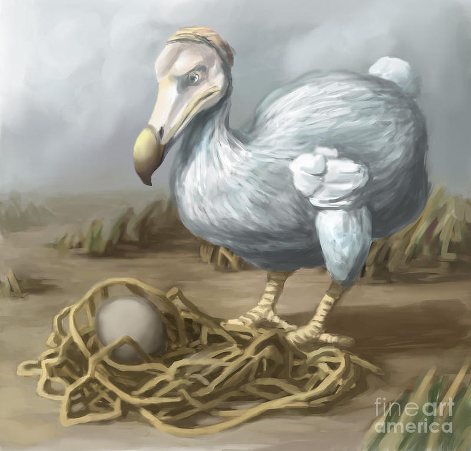
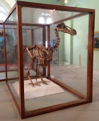
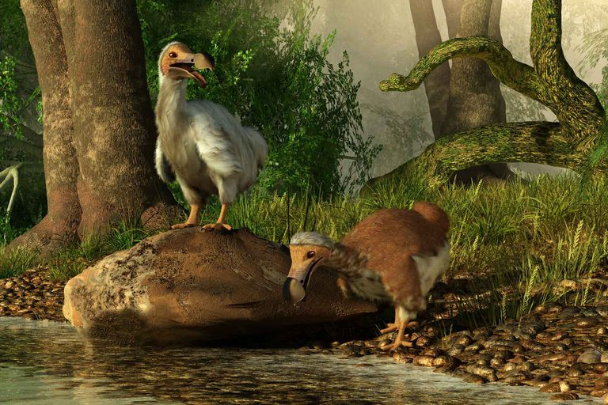
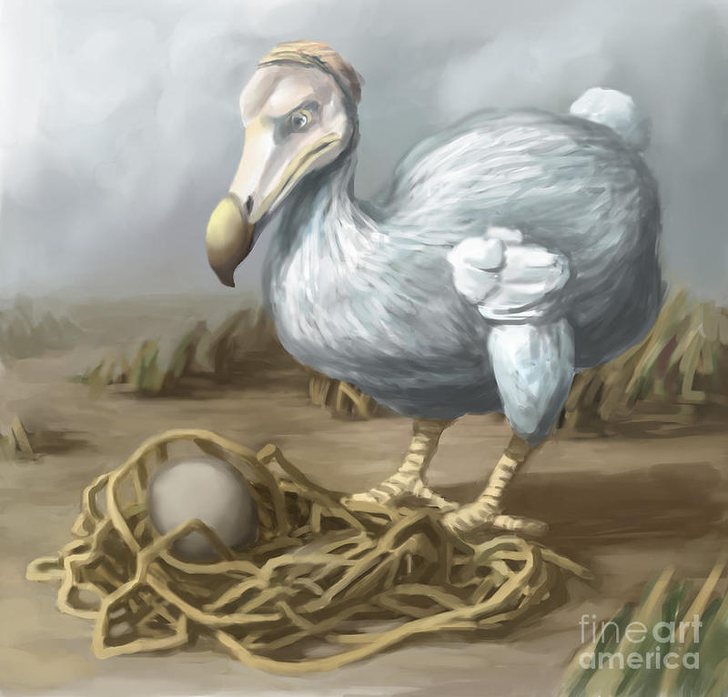
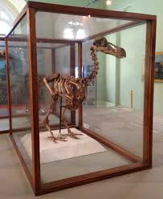
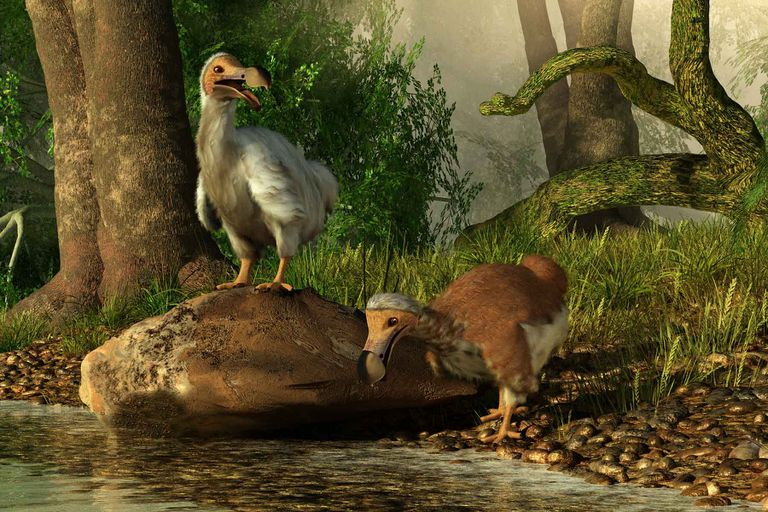

The Dodo Bird
All of the Dodo Bird Facts
The dodo (Raphus cucullatus) is an extinct flightless bird that was endemic to the island of Mauritius, east of Madagascar in the Indian Ocean. The dodo's closest genetic relative was the also-extinct Rodrigues solitaire, the two forming the subfamily Raphinae of the family of pigeons and doves. The closest living relative of the dodo is the Nicobar pigeon. A white dodo was once thought to have existed on the nearby island of Réunion, but this is now thought to have been confusion based on the Réunion ibis and paintings of white dodos.
 





In 2002, American geneticist Beth Shapiro and colleagues analysed the DNA of the dodo for the first time. Comparison of mitochondrial cytochrome b and 12S rRNA sequences isolated from a tarsal of the Oxford specimen and a femur of a Rodrigues solitaire confirmed their close relationship and their placement within the Columbidae. The genetic evidence was interpreted as showing the Southeast Asian Nicobar pigeon (Caloenas nicobarica) to be their closest living relative, followed by the crowned pigeons (Goura) of New Guinea, and the superficially dodo-like tooth-billed pigeon (Didunculus strigirostris) from Samoa (its scientific name refers to its dodo-like beak).
A similar cladogram was published in 2007, inverting the placement of Goura and Dicunculus and including the pheasant pigeon (Otidiphaps nobilis) and the thick-billed ground pigeon (Trugon terrestris) at the base of the clade. The DNA used in these studies was obtained from the Oxford specimen, and since this material is degraded, and no usable DNA has been extracted from subfossil remains, these findings still need to be independently verified. Based on behavioural and morphological evidence, Jolyon C. Parish proposed that the dodo and Rodrigues solitaire should be placed in the subfamily Gourinae along with the Groura pigeons and others, in agreement with the genetic evidence.